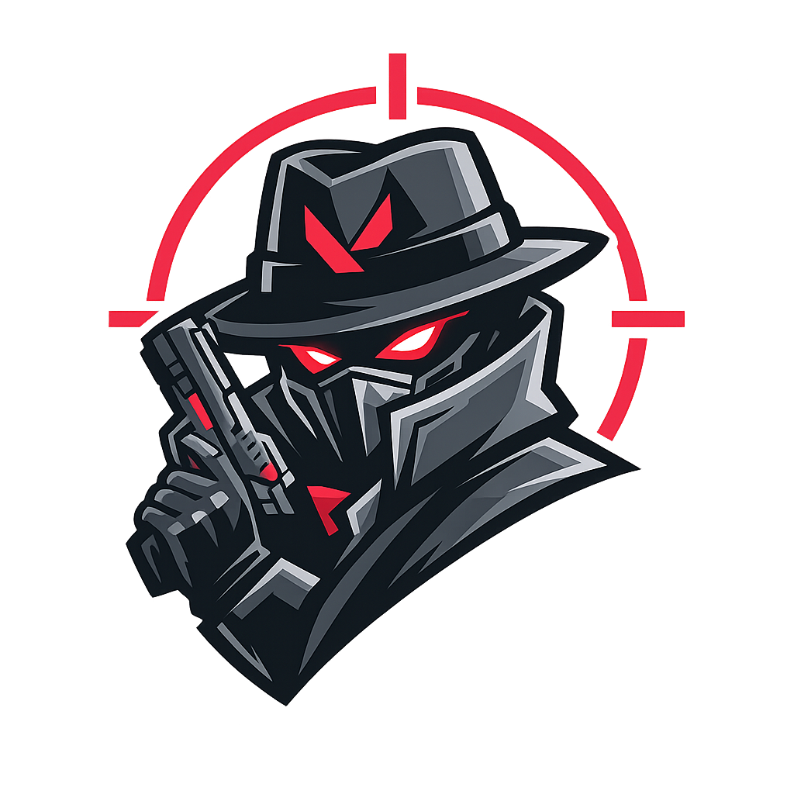

Team match history without public exposure.
Fubacam helps the Fubalicious Valorant team keep a shared record of recent matches, post Discord summaries, and generate lightweight internal rankings for registered members.

FubacamPrivate Discord tool for Fubalicious
A private, non-commercial Valorant match tracker built for the Fubalicious team. Players opt in with Riot Sign On, and match summaries stay inside our Discord server.
Fubacam helps the Fubalicious Valorant team keep a shared record of recent matches, post Discord summaries, and generate lightweight internal rankings for registered members.
Fubacam does not collect Riot passwords and does not ask players to share login credentials. Players link their account through Riot Sign On and can remove their Discord registration.
Stored data is limited to Discord IDs, Riot display information, Riot PUUIDs, match summaries, and Discord channel settings needed for the bot to work.
The intended production flow uses Riot Sign On and the official Riot Games API. After a player authorizes access, Fubacam stores the player's PUUID and checks recent Valorant matches through the active match provider.
The bot is not a public SaaS product, is not monetized, and does not scrape Riot, Tracker Network, or third-party websites.